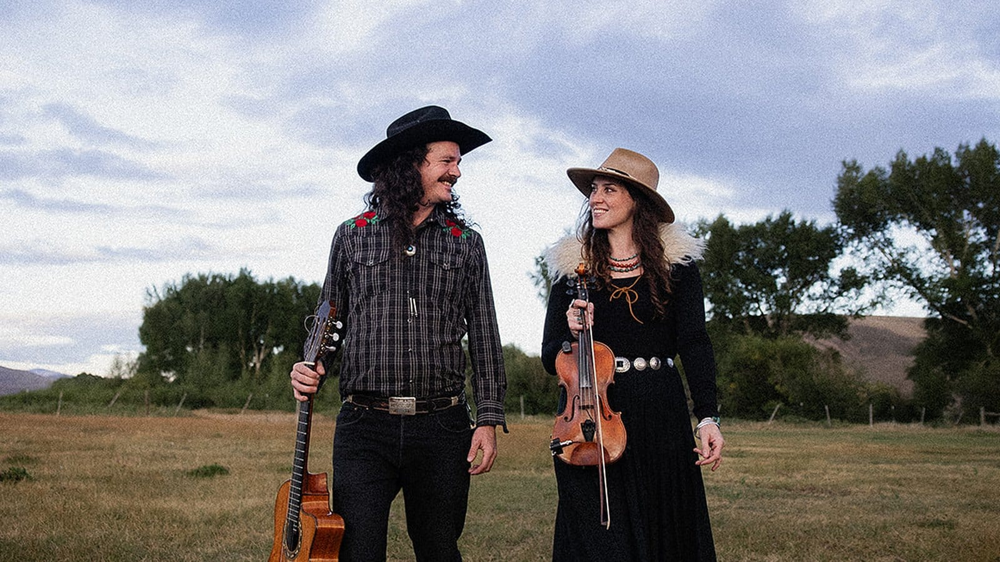

Violin and guitar
Roma Ransom
Music in Patagonia and Yeti films
Colorado Springs
A pair of guitars is one of the easiest ways to bring live music to an event in The Springs. A duo fits on a patio, in a hotel lobby or beside the dinner tables, and two musicians can play anything from flamenco to the songs everybody knows.
Here are the duos and trios we’d suggest for Colorado Springs, including a married violin and guitar duo who live there. Planning a bigger party? Learn more about private parties in Colorado Springs.
Four kinds of duo
Planning your event at one of the resorts? Learn more about live music at the Broadmoor, Cheyenne Mountain Resort and Garden of the Gods Resort.
Video Clips
Here’s Roma Ransom playing their song Smoke Rings, Dirty Flamenco playing tangos, and our jazz duo playing Autumn Leaves.
“This husband-and-wife duo was the perfect addition to our Americana-themed grand opening. She was exactly what we needed, her voice and presence brought everything together, and together they created a warm, lively vibe that made the event truly special. Highly recommend!”
Let us know roughly how many guests, too, and whether you’d like songs with vocals or something instrumental.